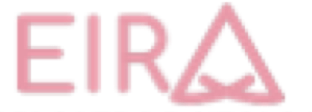
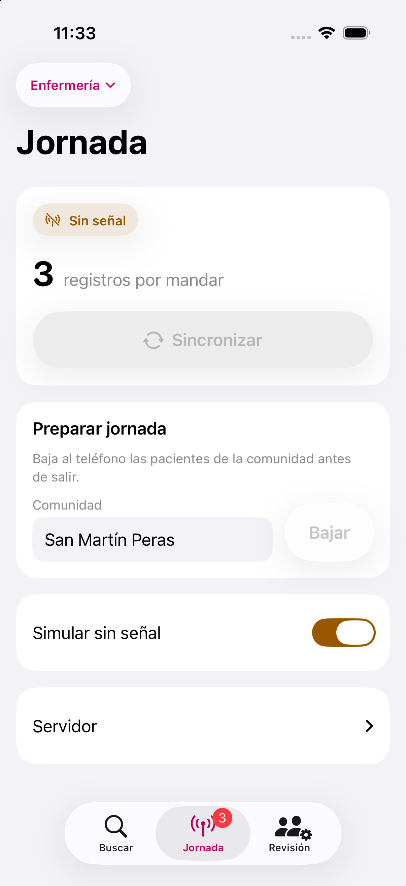
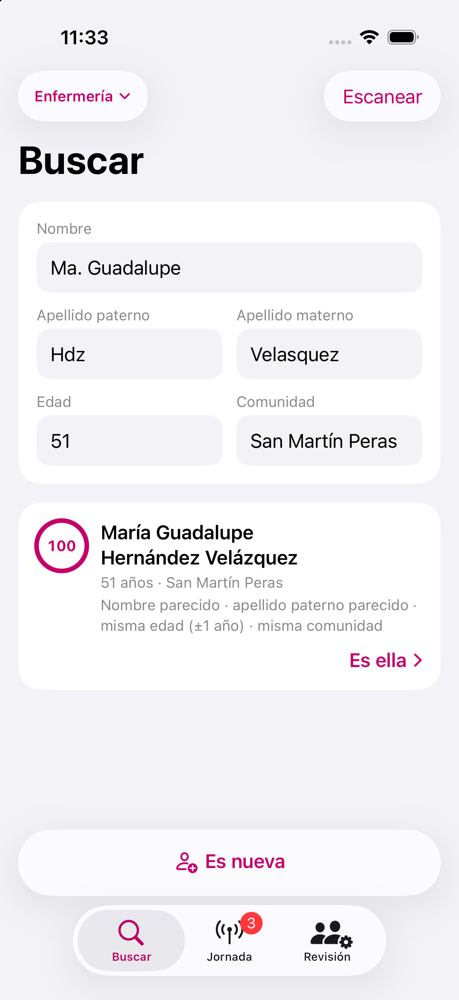
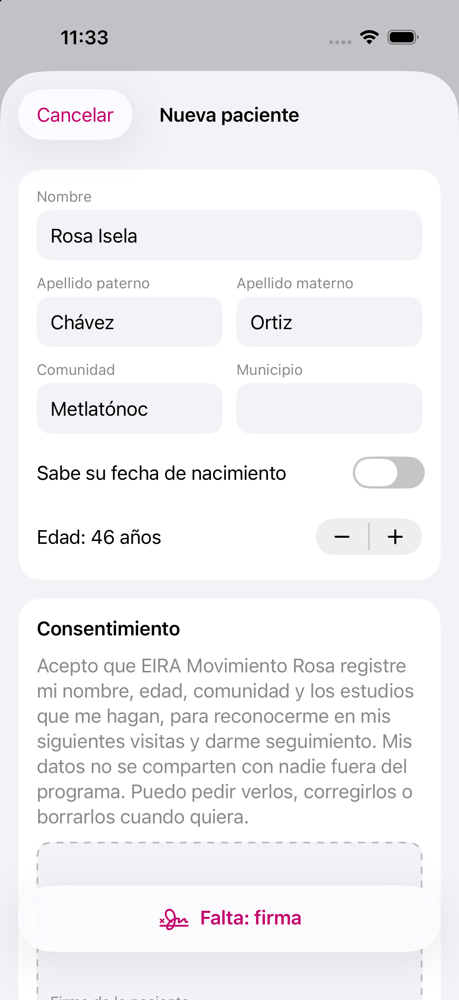

Expediente Rosa
El expediente de cada paciente de las brigadas de EIRA: una app de iPhone que funciona sin señal y un panel web para coordinación y patología.

Reto de EIRA Movimiento Rosa A.C.Nerdearla Vibeathon · CDMX · 21 de noviembre de 2026

Personas ficticias. El problema y las cifras son de EIRA.
En el iPhone, sin señal

1
Buscar
Aunque el nombre venga mal escrito.

2
Expediente
El médico ve el historial y agrega estudios.

3
Nueva paciente
Sin firma no se guarda.
4
Sincronizar
Cada registro llega una sola vez.